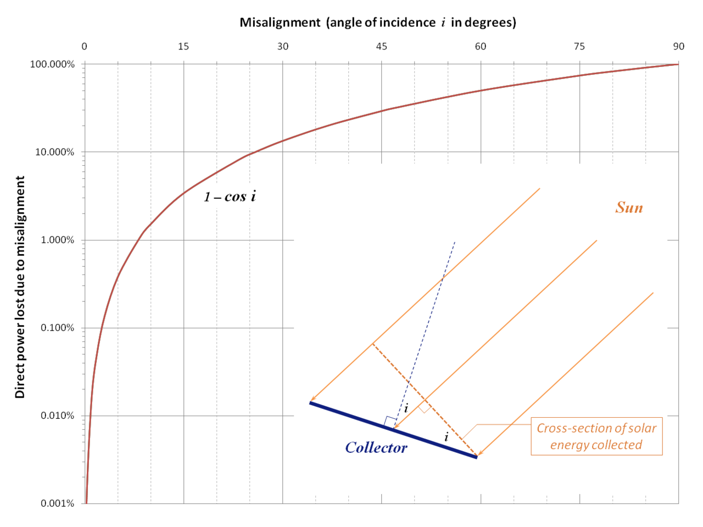

Build a device that will automatically move a solar panel along two axes such that it is perpendicular to the sun. There are two photoresistors that increase/decrease resistance depending on quantity of light received. This allows for the maximum possible energy to be delivered to the solar panel. Left/right and up/down servo motors will be utilized in order to manipulate the position of the solar panel with respect to the sun.
You can find the required materials here.
Most solar panels are fixed, meaning that the amount of power generated from the panels depends on the position of the sun. This creates inefficiencies in power generation and consumption, which could be solved through creating a solar tracking system.
When a solar panel is misaligned with the sun (not perpendicular), the power generated from the solar panel begins to drop off. The power drop off is modeled by the equation LOSS = 1 - cos(i), where i is the angle between the top of the solar panel and the sun.

By Anmclarke at en.wikipedia, CC BY-SA 3.0, Link
With a solar tracking system, the power loss can be eliminated, as the servo motors will constantly adjust to ensure that the maximum possible power is generated.
Click the button below to see my solar tracker design!